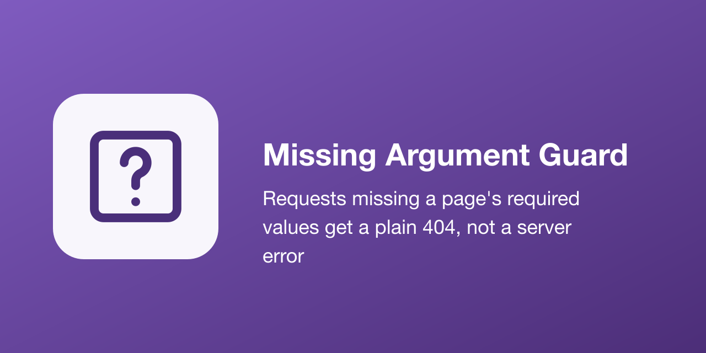

Odoo hands the values in a request straight to the page's code. When a page needs a value the request doesn't carry, such as /scoped_app without app_id, nothing checks first: the code crashes, the visitor gets a server error and your log a traceback. Real visitors never send these requests; scanners send them all day.
This module checks every request before the page runs. If a required value is missing, the answer is a plain 404, which isn't logged as an error.
Covers every page and JSON-RPC call, including ones added by other modules later.
Scanner traffic stops filling your log with tracebacks and setting off error alerts.
Requests that carry what the page needs work exactly as before.
It installs automatically with Odoo's web client.
This module is free. Help installing, setting up or using it is available from Meskis Works with a support contract: sales@meskis.net.